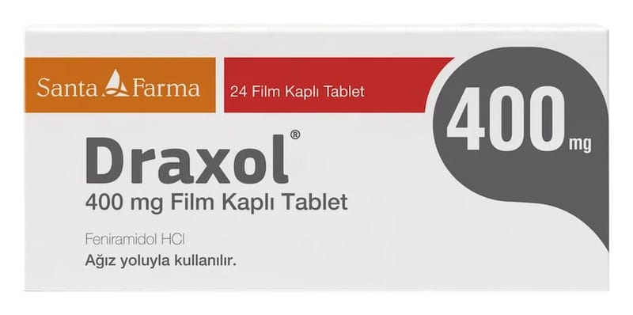

Draxol 400 mg Film Kaplı Tablet, 24 Adet

Ne için kullanılır
KT · Bölüm 1DRAXOL®, kas gevşetici ve ağrı kesici olarak etki gösterir. DRAXOL®, karton kutuda, 24 tabletlik blister ambalajda, kullanma talimatı ile sunulmaktadır. DRAXOL®; kas-iskelet sistemi ile ilişkili, aniden başlayan ağrılı kas kasılmalarına bağlı belirtilerin azaltılması için kullanılır. Kaslardaki gerginliği giderir, ağrıyı geçirir ve kramp halindeki iskelet kasının fonksiyonunu sağlar.